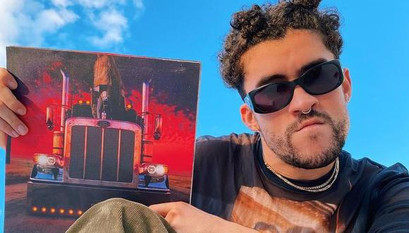

EL ULTIMO TOUR DEL MUNDO
EL ULTIMO TOUR DEL MUNDO (estilizado en mayúsculas) es el tercer álbum de estudio en solitario, el cuarto en general, del rapero y cantante puertorriqueño Bad Bunny. Se lanzó el 27 de noviembre de 2020 por Rimas Entertainment, solo nueve meses después de su trabajo discográfico anterior, YHLQMDLG. Está compuesto por dieciséis temas y cuenta con apariciones especiales de Jhay Cortez, Rosalía y Abra. Según la canción de Bad Bunny, este sería el último álbum del cantante antes de retirarse de la música por un período de tiempo indefinido. Se convirtió en el primer álbum en español en alcanzar el número uno en el Billboard 200 de Estados Unidos.
Antecedentes y lanzamiento
Bad Bunny adelantó por primera vez su tercer álbum de estudio el 29 de febrero de 2020, cuando publicó la canción que en su letra indicaba: «Y en nueve mese' vuelvo y saco otro pa' retirarme tranquilo como Miguel Cotto». Sin embargo, en una entrevista dada a la revista Rolling Stone el 14 de mayo de 2020, Martínez se refirió a su supuesto retiro musical: «Nunca me retiraré de hacer esto... Tal vez lo haga del ojo público y de las giras, estoy cansado y odio viajar. Me encanta hacer música desde que tenía 14 años, cuando era mi mejor pasatiempo».
El 24 de noviembre, el cantante anunció a través de Twitter que su próximo proyecto tendría dieciséis pistas. El día después anunció la fecha de lanzamiento del álbum, su título, lista de canciones, colaboradores y lanzó algunos paquetes de merchandising que incluían sudaderas con las ciudades de una futura gira mundial. El disco, a diferencia de sus producciones anteriores contó solo con tres colaboraciones Jhay Cortez, Rosalía y Abra, sobre la escasa participación de otros artistas, el cantante comentó para Apple Music: «en el negocio todo el mundo debe hacer colaboraciones, pero yo creo que es el momento de demostrar versatilidad y de traerle algo frescos». El álbum se lanzó la media noche del 26 de noviembre de 2020, junto con un vídeo de la canción «Yo visto así».
Composición y grabación
El último tour del mundo es un álbum de trap latino y reguetón, impregnado de una variedad de estilos de rock alternativo, indie rock post-punk, y rock en español, así como influencias del pop alternativo, experimental, new wave, música electrónica, hip hop, y R&B.
El último tour del mundo ha sido considerado como «el trabajo más personal de Bad Bunny hasta ahora», el álbum marca una desviación del estilo perreo de Bad Bunny, contó con tres colaboraciones: «Dakiti» junto a Jhay Cortez, una tema R&B con la cantante Abra y otra con Rosalía. Estás últimas canciones se grabaron por separado, debido a la pandemia de COVID-19. El disco en general, fue preparado en su totalidad durante la cuarentena de 2020. Martínez trabajó en el álbum mientras viajaba, en Los Ángeles, México, y en su casa en Puerto Rico. Fue diseñado por el ingeniero La Paciencia.
Recepción
El 30 de octubre, se lanzó el primer sencillo del álbum, «Dakiti», con el cantante puertorriqueño Jhay Cortez. El tema se anunció oficialmente el 26 de octubre de 2020 por Bad Bunny, quien publicó un adelanto de la pista en su cuenta de Instagram. En el día de lanzamiento del álbum, se presentó el videoclip del tema «Yo visto así», el video comprende la aparición de varias personalidades, entre ellas Ricky Martin, Sofía Vergara, Karol G, Sech, entre otros. Durante el videoclip, se da a conocer su reciente compromiso con la firma fabricante de ropa deportiva Adidas y se muestran imágenes de su futura colaboración.
Listado de canciones
Aquí tenemos el listado de canciones y en colaboracion con spotify tenemos una prueba gratuita de cada canción: